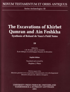

J.-B. Humbert and A. Chambon
The Excavations of Khirbet Qumran and Ain Feshka
University Press: Fribourg Switzerland, 2003
 |
The photographic album of the archaeological excavations at Qumran inaugurates the final presentation of the results achieved at Khirbet Qumran and at Ain Feshkha. If the forthcoming, complete presentation of the results has been slow in arriving, it is due to the complex nature of the site. Few archaeological sites have raised so many questions and excited so much interest and heated discussion, sometimes touching on controversy. It hardly seems necessary to remind readers that the research project at Khirbet Qumran and its environs was a mission financed by the French Ministry of Foreign Affairs; that the mission was jointly led by the Jordanian Department of Antiquities, whose director, Mr. Gerald Lankester Harding, was personally involved, by the Palestine Archaeological Museum (Rockefeller Foundation) and by the Ecole Biblique. The American School of Oriental Research cooperated in the exploration of the cliffs. Roland de Vaux himself had, of course, counted on producing the definitive publication on the work executed on the site and its surroundings. He first gave the essentials of the archaeological data in his preliminary reports, interwoven with an historical framework that he wanted to test. Therefore, the most urgent thing for him was the scrolls. One cannot say, however, that the archaeology of Qumran has not been published. Season after season, de Vaux published preliminary reports in the Revue Biblique. If they were bound together, they would form a considerable volume: 153 pages of text, 41 photographic plates, 249 drawings of complete pottery items, and 6 foldouts suggesting an architectural evolution. An archaeological description of the caves appeared in the Discoveries in the Judaean Desert series. The preliminary results were not only published but treated perhaps even more comprehensively than in many final reports that have appeared since, in the economic manner that sometimes seems to prevail today. However, de Vaux would not have wanted the sum of his work to be compared in this way. A number of scholars who were fairly frequent visitors to the excavation also published on the subject on different occasions: J. T. Milik, a close disciple of de Vaux, concerned more with the history and the texts than with the site, supported his master's conclusions as to the archaeology in 1957. E.-M. Laperrousaz drafted with meritorious care a status quaestionis of the archaeology of Qumran, not neglecting to give his opinion. He repeated his opinions in a long article in a dictionary. M. Du Buit O.P., in charge of the architectural surveys during the second and third seasons, made use of a popular publication to express some of his ideas. De Vaux's preliminary reports, together with the result, of the dig as the stages of the work unfolded, furnished first-hand documentation that bore testimony to his intuitions and hesitations, but above all, to his progress in understanding the intricate nature of Qumran. A few years later, de Vaux delivered the volume of Schweich Lectures in two versions: the French in 1961, followed by the English in 1973. This volume was published posthumously but had been corrected by him before his death. Therein de Vaux elaborated his thoughts, taking account of the objections that had been aired. His sole aim had always been to try to establish, above all else, the maximum coherence between the archaeology of the site, the texts from the caves and the history supplied by the coins. De Vaux's reconstruction was not always convincing, far from it. He faced attack from various quarters: objections were made that the connection he established between the site and the manuscripts was not correct, that his chronology was inadequate and, finally, that his vision of communal life lacked proof. In two articles in the Revue Biblique, he refuted, point by point, the theses that contradicted him. He defended his position with strong conviction in his "Esseniens ou Motes?", following a more serious challenge on some points put forward by G. R. Driver. De Vaux crossed swords effectively with an ardor well known to us, without departing from a rigorous intellectual honesty. In his discussion relating to the chronology, the link between the site and the texts, and the attribution of the remains to the Essenes, he set out his assertions so convincingly that there was no room for hesitation. Some uncertainties in the archaeology remained insignificant in his view and never provided sufficient cause, however one interpreted them, for him to alter the broad outline of his presentation, the merit of which was not only its clarity but its great probability. He never abandoned it. De Vaux died five years later at the height of his powers without having completed his work. |
| Back to Publications | Table of Contents |